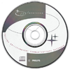
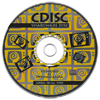
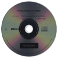
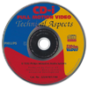
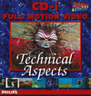

CD-i Disc Images Downloads
On this page, you will find several CD-i programs in Disc Image format. All files include a cue-sheet that can be used in conjuction with CDRWin, some also include a high-resolution scan of the disc.
CD-i'nterlink
With CD-i'nterlink you can view the contents of any file that is stored in NV-RAM directly on your CD-i player, but best of all it offers the possibility to transfer files from a CD-i player to a PC or vice versa using the X-Modem or Z-Modem protocols! Refer to Can I transfer data from the CD-i to my PC? in the FAQ for more information.
Download cdinterlink.zip (380 KB)
|
 |
CDI 660/670 Keydisc
With this disc, you can customize the startup message of the CDI 660 and CDI 670 player, disable the playback of certain CD-i or CD-Audio discs, and set the player's startup delay time. Please note that this disc can only be used in conjuction with the CDI 660 and CDI 670 players! Refer to How can I enter the features of the CDI 660/670 key-disc? in the FAQ for more information.
Note: These functions and consequently this keydisc are also usable on a CDI 490.
Download cdi_keydisc.zip (6321 KB)
CD-i Stub 0.5.1
CD-i Stub developed by CD-i Fan can be used in conjunction with CD-i link from the same author to initiate communication between a PC and CD-i player with a nullmodem cable. Included alongside the disc image format of the program you will find a larger file including sources and the CD-i Link executable. Refer to CD-i Nullmodem Cable Specification and CD-i Link for more information.
Download cdi_stub-0.5.1.zip (14 KB)
Download cdistub-0.5.1.zip (141 KB)
CDISC 4 Freeware
This disc contains a wealth of tools and information for CD-i developers; sources are included for many of the tools. It was originally distributed to CD-i developers attending the fourth CDISC developer conference in 1993.
The disc contains a CD-i demo application; to extract the developer files you need a CD-i disc image reading program, e.g. IsoBuster.
Download cdisc4.zip (256 MB)
|
 |
Final Production Delivery Specification, Version 8.05
This disc is the companion of the 'CD-i Final Production Delivery
Specification' (FPD) document from Philips Interactive Media.
The disc contains the Philips Media bumper application, audio and text warning message files and Green tests. To extract these files you need a CD-i disc image reading program.
Download fpd805.zip (72 MB)
|
 |
CD-i Full Motion Video Technical Aspects
This CD-i demonstrates the possibilities and the technical aspects of the CD-i full modion video; therefore your player must be equipped with the"Full-Motion Extension" cartridge. Sources for the demo application are included on the disc; to extract them you need a CD-i disc image reading program, e.g. IsoBuster.
Download fmvdemo.zip (390 MB)
|
 |
CD-i Full Motion Video Technical Aspects booklet
This is the fold-out booklet included with the CD-i Full Motion Video Technical Aspects disc. The booklet contains screenshots and descriptions of every Full motion demonstration on the disc.
Download fmvdemo_booklet.pdf (PDF, 8 pages)
|
 |
|

{kind=link}
{kind=link}
{kind=link}
{kind=link}
{kind=link}